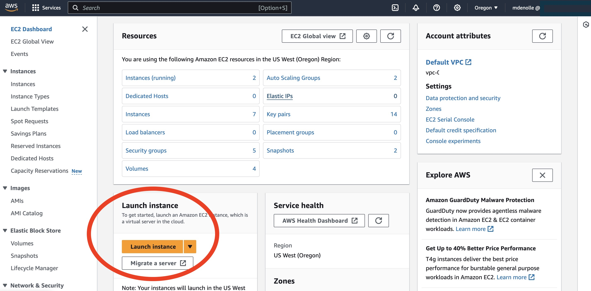

AWS 101
Contents
AWS 101¶
This tutorial will walk you thought getting on an AWS cloud instance from the ground up.
What is Cloud Computing¶
Presentation from Naomi Alterman (UW) and Rob Fatland (UW) and their video tutorial:
Web Console Access¶
Specific to workshops:¶
log in with your designated IAM User to this console: https://806812320051.signin.aws.amazon.com/console
Choose the username that was decided by you and the workshop admin (IAM user nae account).
As a first log in, the auto generated password will need to be replaced. Use a sophisticated password to confirm with AWS security standards.
Choosing a region¶
An important aspect of cloud is that the computing and data centers are distributed around the world and labeled as “regions”. For fastest connection to data storage on S3, we strongly recommend to choose the region where the data is. For instance, the AWS open data sets
To choose a region in AWS, follow these steps:
Log in to your AWS Management Console.
In the top-right corner, click on the current region name (e.g., “US East (N. Virginia)”).
In the dropdown menu that appears, select a region (e.g. “US West (Oregon)”).
After selecting the region, all AWS services you use will be hosted in that region.
Launching an instance¶
Launch an instance using EC2 (Elastic Computing Cloud). Follow the steps below. Screen shots of the steps are linked here
In the AWS Management Console, navigate to the EC2 dashboard.
Click on “Launch Instance” to start the process of creating a new EC2 instance.

Choose a default instance OS:
Amazon linux. You may also choose an Amazon Machine Image (AMI).Name and tags: Be specific for best job management:
FirstName_LastName_jobnameInstance type: t2.micro
Key pair: create a new key pair. Download the .pem file, move it to a location that you can have access to and remember where it is. If the file does not save as .pem, replace the extension with .pem. If you use a windows computer, you might need a ppk
Network Setting:
Allow SSH traffic from->My IP.Use existing security group, use default.
In Advanced Details, choose a
Spot instance. Spot instances are discounted instances from unused EC2 capacities. Most seismology can be ran on Spot.The rest is default and launch it. Now the instance is launched, use the console to check.
View instance, click on it -> Right click -> connect -> SSH client. We will only go through step 3 and copying the ssh command line.
Change the permission to your local PEM/PPK file to only readibly to you. Use terminal and change the permission by going into the folder where the PEM/PPK file:
chmod 400 file.pemLogin to the Instance
a. On Linux, copy the ssh link command in the folder where the PEM file is below and ssh to the instance.
ssh -i "file.pem" ec2-user@ec2.IPADDRESSb. On Windows, login to an EC2 instance using PuTTY (a free SSH client) on Windows: * Open PuTTY * On the PuTTY Configuration screen, click Session in the Category pane. * In the Host Name (or IP address) box, paste
ec2-user@YOUR_Public IPv4 DNSYOUR_Public IPv4 DNS can be found in the details of your EC2 instance * Make sure Connection type: SSH is clicked * Back in the Category pane, expand Connection, expand SSH, and click Auth. * In the Private key file for authentication box, click browse and locate your .ppk file for the instance that you created and click. * Now click open and accept the connection.
Installing Software¶
To start from scratch, copy paste these commands in the terminal. You can copy the lines all at once and install it.
sudo yum install -y git docker
wget https://repo.anaconda.com/miniconda/Miniconda3-latest-Linux-x86_64.sh
chmod +x Miniconda3-latest-Linux-x86_64.sh
./Miniconda3-latest-Linux-x86_64.sh -b -p $HOME/miniconda
./miniconda/bin/conda init bash
bash
You can customize to save time. If pip or docker is not necessary, remove these lines.
Now you can install your software! Clone your repository, install your environment, run your scripts. We will illustrate with the example
git clone https://github.com/SeisSCOPED/seis_cloud
cd seis_cloud
conda create -y -n seiscloud python=3.12 pip
conda activate seiscloud
pip install -r requirements.txt
(update from github and overwrite local: git fetch + git merge)
Download / Upload to your EC2 instance¶
To download from EC2:
scp -i "your.pem" ec2-user@ec2-publicIPAddress.us-west-2.compute.amazonaws.com:/home/ec2-user/seis_cloud/file .
If you are on Windows:
C:\> pscp -i yourkey.ppk ec2-user@publicDNS:/home/ubuntu/yourfilename C:\[local_destination_path]\[folder]
Running Jupyter Notebooks¶
To get the jupyter notebook running:
jupyter notebook --ip 0.0.0.0
Open a browser, type the IP address of the instance (see the public Public IPv4 DNS) Then type in the browser: publicIPaddress:8888
You will be prompted to window and enter a token. On the EC2 terminal instance, you will see:
http://PRIVATE_IP.us-west-2.compute.internal:8888/?token=LONG_TOKEN
Copy and past the LONG_TOKEN in the token window and the jupyter notebook will start.
There are alternative options to login:
Forward the ports when login in the instance:
ssh -i "user.pem" user@publicIPaddress -L 8888:localhost:8888 -N
Open a browser and type localhost:8888/
Warning: we have experienced exception. Safari and Chrome may treat the connection as malware. These are warnings and can be ignored (???) and find a way to continue.
Save the Virtual Image¶
You can save the image (AMI) so that you can start from there next time. This can save time and effort in setting up the instance from scratch every time. Here are the steps to save the virtual image (AMI) of an EC2 instance in AWS:
In your AWS Management Console:
Navigate to the EC2 dashboard.
Select the EC2 instance that you want to save the image of.
Right-click on the instance and click on “Create Image” in the dropdown menu.
In the “Create Image” dialog box, enter a descriptive name for your image in the “Name” field. For this workshop, please use the format ”FirstName_LastName_Image_TutorialX”.
Optionally, you can add a description and tags to the image for easier management later on.
Click on the “Create Image” button to start the image creation process.
Wait for the image creation process to complete. This may take several minutes depending on the size of your instance and the amount of data being saved.
Once the image has been created, it will appear in the “AMIs” section of the EC2 dashboard.
You have to save it every time you want to save the current state of the instance
Using Docker on EC2¶
You can also run the scripts using the automatically generated Docker image. Note that if you have a Jupyter notebook running on port 8888 before starting Docker, you will need to terminate it before running Docker to avoid port conflicts.
Start docker
sudo systemctl start docker
Pull the image. This will pull the Docker image named seis_cloud from the GitHub Container Registry, with the specific tag f041ec0.
sudo docker pull ghcr.io/seisscoped/seis_cloud:f041ec0
Run the docker. This will run the seis_cloud image in interactive mode, and forward port 8888 from the container to port 8888 on the EC2 instance. The latest tag will pull the most recent version of the image.
sudo docker run -it -p 8888:8888 ghcr.io/seisscoped/seis_cloud:latest
You will be inside the docker container. You can now run a jupyter notebook from there.
jupyter notebook --ip 0.0.0.0
To exit docker, simply type
exit
Terminating an instance¶
What is the difference between stop and terminate and instance, saving data vs cost NOTE: visit here to read more about stopping vs terminating. If you stop, you do not pay for the hardware, but you will pay for the EBS volume only and the data is saved in the EBS volume. If you terminate, all data will be wiped and you will cease to pay.